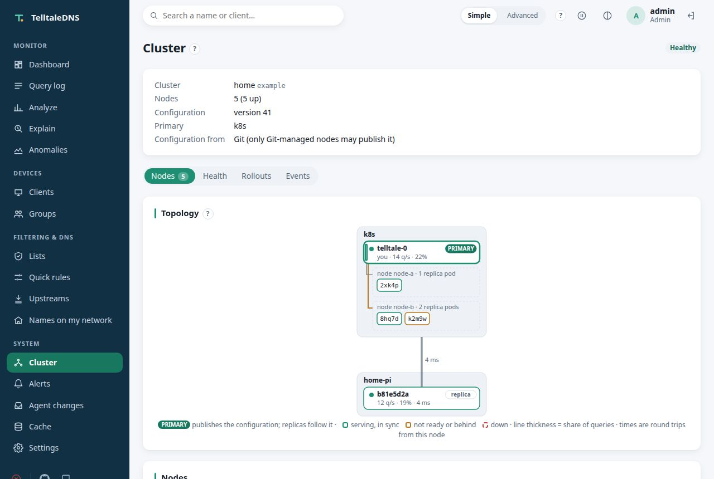

Kubernetes
Your network's DNS,
and your cluster's too.
TelltaleDNS runs from one Helm chart. Your devices get filtered, encrypted DNS on one address, your pods get named by the workload that runs them, and a Raspberry Pi can join as the second DNS server, all managed from one place.
What you get
Built for running in a cluster
One Helm chart
Published to GitHub's registry on every build, for amd64 and arm64, with a values schema that rejects a mistyped option by its path. Settings and Secrets come from values, so Argo CD and Flux manage it like anything else.
Real client addresses
Per-device statistics and rules need the real sender. The DNS Service keeps it, and if something in between hides it, the web UI says so.
One IP for everything
DNS, the web UI, and the cluster port can share the DNS Service's address: one IP to hand out in DHCP and to remember.
Resolver pods that scale
Stateless resolver pods join the controller by themselves, take its configuration and compiled lists, and ship their query log back. A pod leaves the Service within about 4 seconds of failing, and a rollout drains it first.
A Pi in the same cluster
A Raspberry Pi outside Kubernetes joins as a full member and second DNS server: the same lists, groups, and rules, its queries in the same log, and all of it managed from either side.
Pods as devices
Pods are named by the workload that runs them, so a Deployment is one device across every rollout, with its own top domains, timeline, and anomaly baseline. Namespaces get groups with a label.
Failover you've tested
A drill takes a node out for a few minutes and reports which devices moved to the other server, how fast, and which ones are stuck. On a resolver pod it also measures how long the Service kept sending to it.
Changes that canary
Each configuration change can reach the resolver pods first and the Pi after a bake time, and the cluster goes back to the last good version by itself if the canaries start failing.
Monitoring included
A ServiceMonitor, alert rules, and the Grafana dashboard from chart values, plus a NetworkPolicy and DoT, DoH, and DoQ with a cert-manager certificate.
Agent-ready
Workloads are in the API and in MCP (list_workloads, get_workload), and a change an agent proposes is a plan you approve.
Your cluster's own DNS
Point the cluster at it
With pod naming on, TelltaleDNS answers your pods too: they're filtered by their namespace's group, show up by workload, and still resolve Service names, because TelltaleDNS sends cluster.local on to CoreDNS. Try it on one workload, then make it the cluster's default.
- Turn on pod naming in the chart values, with CoreDNS's address and a fixed address for the DNS Service.
- Try one workload with
dnsPolicy: Noneand TelltaleDNS as its nameserver. - Make it the default with the kubelet's cluster DNS (one line in k3s's config file), with CoreDNS second in case TelltaleDNS is unreachable.
See it
Workloads, not pod addresses


Start small. mode: allInOne (one pod) answers tens of thousands of queries a second. Move to mode: scaled or add a Pi when you want a second server, and turn on pod naming when you want to see your workloads. Every step is a chart value.